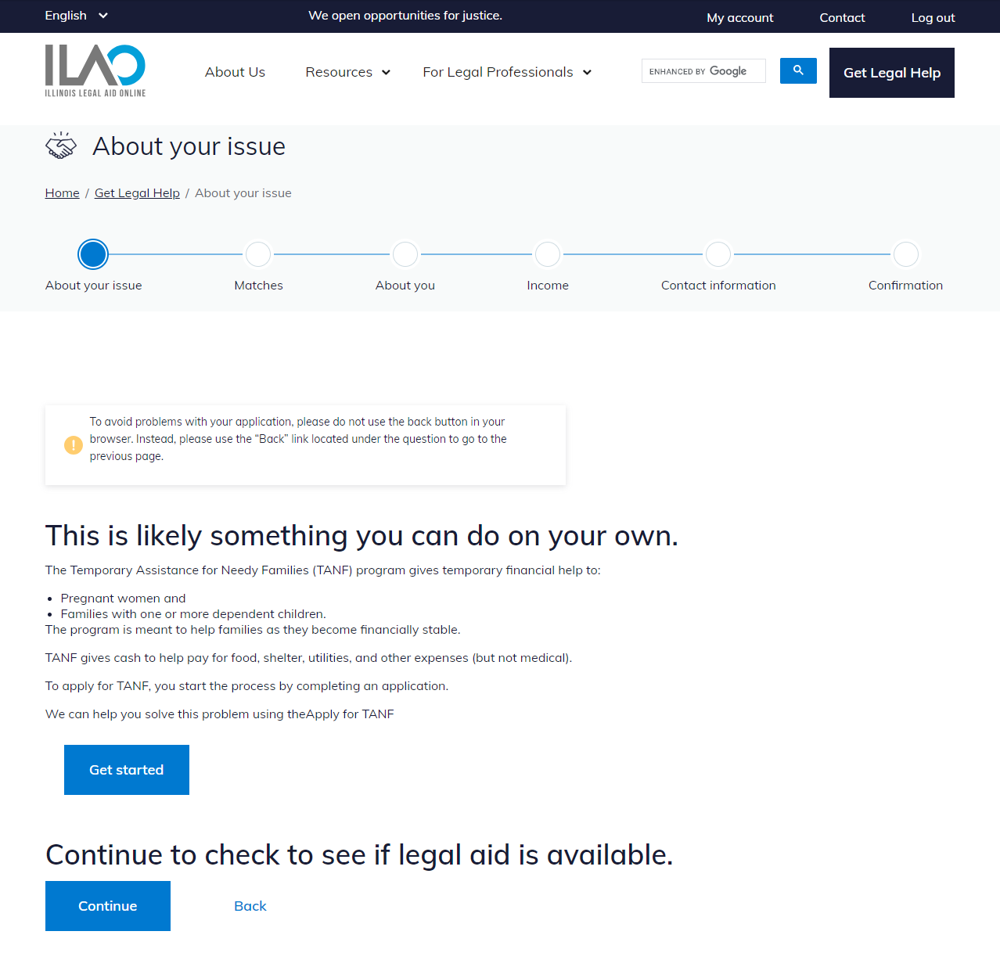

COPE integration
Basic concepts:
The COPE (Create Once Publish Everywhere) content model is designed to allow for content re-use across channels. Content is maintained and updated by ILAO’s content team in one central location. Using this model, we can bring up-to-date chunks of legal information into OTIS to help educate applicants as they continue their triage journey.
Trigger:
An API call is performed whenever the custom LegalServer field “ilao_cope_option” is included in the guided navigation path
The API call uses the value (the node id for a particular piece of legal content) for the custom field to determine which content to display
Adding to OTIS:
a custom field (ilao_cope_options) was created in LegalServer that has the “text” option.
the custom field is added to a guided navigation path as an “Action: set a fields value” where the content needs to be displayed
the node id for the legal content is added as the text value for the field
instruction elements can be added to provide the user specific context to the legal content
OTIS applicant sees:
Instructions: Any instructional elements provided are displayed to provide context for the legal content.
Legal content: The content from the specified node id appears seamlessly within the same theme as other guided navigation text.
Links: Any links provided in the content (e.g., links to apply for TANF benefits) are shown to the applicant.
Instruction for continuing OTIS application: Clear instructions informing the applicant they can still continue their OTIS application after reviewing the legal content can be provided.
Navigational controls:

Continue button: A “Continue” button allows the applicant to proceed with their application for legal help.
Back link: A “Back” link allows the applicant to navigate back to the previous step, if needed.